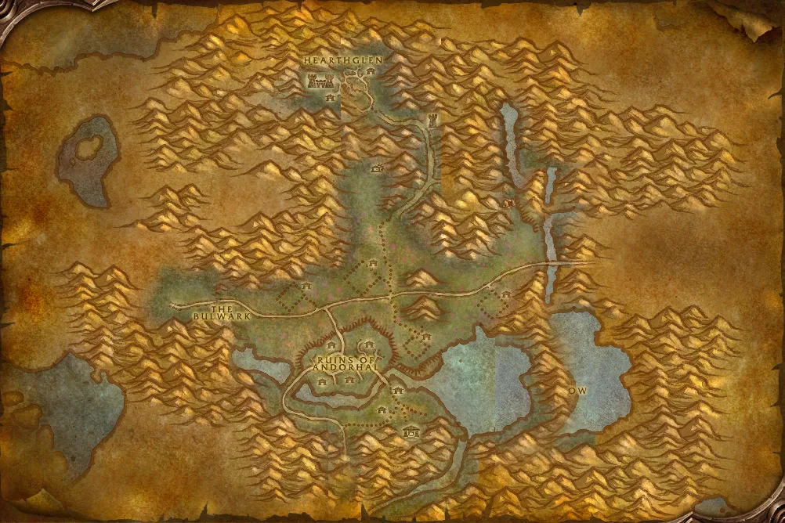

Accès
 Entrée Maleterres de l'Ouest 69.7, 73.2
Entrée Maleterres de l'Ouest 69.7, 73.2 5 joueurs · niveaux 58 à 60
5 joueurs · niveaux 58 à 60 13 quêtes · 7 boss
13 quêtes · 7 boss
Le point rouge marque l'entrée du donjon.
Toutes les zones sont sur notre carte interactive.
L'école de nécromancie du Fléau, dans les cryptes de Caer Darrow, aux Maleterres de l'Ouest.
📅 Mise à jour le 4 novembre 2026🛠 Patch 1.60.1.70755

Entrée Maleterres de l'Ouest 69.7, 73.2 5 joueurs · niveaux 58 à 60 13 quêtes · 7 bossLe point rouge marque l'entrée du donjon.
Toutes les zones sont sur notre carte interactive.
| Objet | Type |
|---|---|
| Epée de la famille Barov | Deux mains |
| Jambières du fléau spectral | Jambes |
| Spallières royales | Épaules |
| Mantelet de Brume-funeste | Épaules |
| Cape fantasmatique | Dos |
| Jambières d’âme en peine en plaques | Jambes |
| Bâton de métanoïa | Deux mains |
| Objet | Type |
|---|---|
| Trancheuse glaciale | Main droite |
| Robe de la liche glaciale | Torse |
| Marteau Os-transis | Une main |
| Ceinturon de givre | Taille |
| Etreinte de la Mort | Épaules |
| Jambières du maelstrom | Jambes |
| Gantelets de l'étreinte osseuse | Mains |
| Mantelet de magistère | Épaules |
| Protège-mains fébriles | Mains |
| Grèves de mailles des ténèbres | Pieds |
| Tome envoûté | Main gauche |
| Bouclier aux runes complexes | Bouclier |
| Etreinte d'Alanna | Torse |
| Objet | Type |
|---|---|
| Bouquet de roses rouges | Main gauche |
| Protège-mains de Brume-funeste | Mains |
| Objet | Type |
|---|---|
| Gants de magistère | Mains |
| Objet | Type |
|---|---|
| Targe de Cliquethorax | Bouclier |
| Brise-crâne de l'effroi | Deux mains |
| Grèves Corpselight | Pieds |
| Mantelet du marchemort | Épaules |
| Casque d'anneaux d'os | Tête |
| Bottes Sombreruse | Pieds |
| Epaulières de golem d'os | Épaules |
| Objet | Type |
|---|---|
| Lame du seigneur Noirbois | Une main |
| Targe du seigneur Noirbois | Bouclier |
| Fémur de Noirbois | Main gauche |
| Objet | Type |
|---|---|
| Pantalon Tisse-fer | Jambes |
| Anneau d'amalgame | Doigt |
| Anneau du héros inébranlable | Doigt |
| Lame de nécromancie | Main droite |
| Marteau de puissance divine | Deux mains |
Butin d'après les données de WoW Classic : Forever a ajouté de nouveaux objets dans les donjons, la liste sera complétée en jeu. Seuls les objets de qualité inhabituelle et mieux sont listés. Passe la souris sur un objet pour voir ses caractéristiques (info-bulle Wowhead), ou clique pour ouvrir sa fiche.
Donnée par : en ramassant Ecaille de dragon luisante
Donnée par : Betina Bigglezink (Maleterres de l'Est)
Donnée par : Sagorne Creststrider (Orgrimmar)
Récompense : Casque Fureur-du-ciel
Donnée par : Leonid Barthalomew le Révéré (Maleterres de l'Est)
Donnée par : Eva Sarkhoff (Maleterres de l'Ouest)
Donnée par : Alexi Barov (Clairières de Tirisfal)
Donnée par : Weldon Barov (Maleterres de l'Ouest)
Donnée par : Eva Sarkhoff (Maleterres de l'Ouest)
Récompense : Essence spectrale · Rose de Pénélope · Chanson de Mirah
Donnée par : Magistrat Marduke (Maleterres de l'Ouest)
Récompense : Lame de guerre de Caer Darrow · Darrowspike · Couronne de Caer Darrow · Protecteur du Darrowshire
Donnée par : Betina Bigglezink (Maleterres de l'Est)
Récompense : Arrachevent · Bâton des esprits dansants
Donnée par : Bodley ()
Donnée par : Bodley ()
Donnée par : Eva Sarkhoff (Maleterres de l'Ouest)
Noms des quêtes, des PNJ et des objets d'après les données du jeu (Polestar, CC BY 4.0, et Factoruide/Questie).